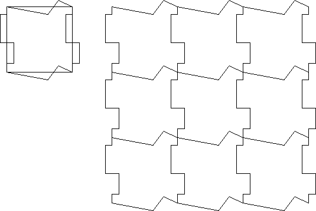
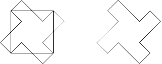

Midpoint modification
| Modifying opposite of sides of a square in complementary fashions (translate the new edge across the square from one side to the opposite) will produce a new shape that tiles the plane. |
| Care must be taken that the modifications do not involve changes so large that they cause the new sides to intersect each other. |
|  |
| One way to modify a side is by using rotational symmetry about the midpoint of the side. |
| Here the side is split into two parts by the midpoint. |
| One part is changed and then this part is rotated 180 about the midpoint to form the modified second part. |
| When using this midpoint modification, any amount of area added to the square by changing one part will be removed from the square by changes in the other part. |
| So the area of the square remains unchanged if the sides are altered by midpoint modification. |
|  |
Return to Background.